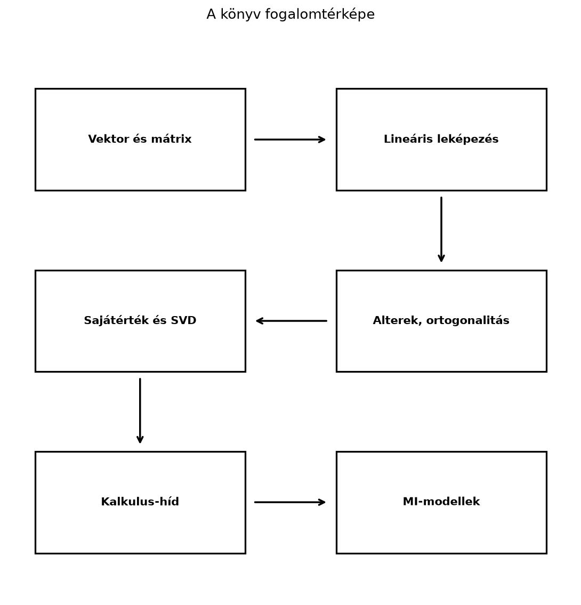

A könyv záró állomásaként érdemes egyetlen térképre feltenni mindazt, amit az előző fejezetekből összeraktál. A lineáris algebra tudása akkor válik eszközzé, ha nem elszigetelt képletekként, hanem egymásra épülő fogalmak hálójaként látod. Ez az összefoglaló abban segít, hogy felmérd, melyik csomópontokat ismered biztos kézzel, hol vannak még fehér foltok, és milyen irányba érdemes továbbmenned.
A könyv nem véletlenül haladt a vektortól a transformer-blokkig. A fogalmi lánc minden láncszeme az előzőre épül, és minden láncszem egyben válasz is egy gyakorlati kérdésre.

Definíció. A jelen összefoglalóban fogalomtérképen a könyv fő fogalmainak olyan, szándékosan egyszerűsített láncát értjük, amelynek csúcsai a fő fogalomcsoportok, az egymást követő csúcsok közötti nyilak pedig az építkezés irányát jelzik. A valódi fogalomtérkép ennél sűrűbb: a csoportok között további, itt fel nem rajzolt kereszthivatkozások is vannak (például a determináns, a Gram–Schmidt-eljárásból adódó QR-felbontás, a tenzorok és a valószínűségi alapok felé).
Az első csomópont a vektor: egyszerre geometriai nyíl és számlista. A vektorok közötti lineáris kombináció adja a kifeszített halmaz, az összefüggőség, a bázis és a dimenzió fogalmát. A mátrix ezután kétféle szerepet kap: egyrészt adattáblaként, másrészt lineáris leképezésként. A mátrix–vektor szorzás a leképezés alkalmazása, a mátrix–mátrix szorzás pedig leképezések kompozíciója.
Az alterek akkor kerülnek előtérbe, amikor azt kérdezzük: hova mutat egy leképezés, és mi tűnik el belőle? Az oszloptér, sortér, nulltér és bal nulltér, valamint a rang–nullitás tétel rendet tesz a megoldáshalmazok szerkezetében. Az ortogonalitás és a vetítés közvetlenül elvezet a legkisebb négyzetekhez és a lineáris regresszióhoz.
A sajátérték-felbontás és a szinguláris érték felbontás a mátrixot „irányokra és nyújtásokra” bontja. Ez az a pont, ahol a lineáris algebra a gyakorlati adatelemzésben elkezd „gondolkodni”: dimenziócsökkentés, alacsony rangú közelítés, pszeudoinverz, numerikus stabilitás. A determináns (9. fejezet) a térfogatarány és az invertálhatóság mérőszáma; a Gauss-elimináció és az LU-felbontás (8. fejezet) a lineáris egyenletrendszerek megoldásának alapja; a Gram–Schmidt-eljárásból adódó QR-felbontás (11. fejezet) pedig az ortonormált bázisok és a legkisebb négyzetek numerikusan stabil eszköze. A numerikus lineáris algebra (16. fejezet) ezeket az eljárásokat teszi stabillá és költség szempontjából átláthatóvá.
A kalkulus-híd ezután a lineáris leképezés fogalmát a deriválthoz köti. A gradiens és a Jacobi-mátrix segítségével értjük meg, hogyan lehet mátrixműveleteket optimalizálni, például gradiensmódszerrel. A visszaterjesztés (19. fejezet) ugyanezt a láncszabályt alkalmazza rétegről rétegre.
A statisztika és az adatelemzés (18. fejezet) a
mátrixok nyelvén fogalmazódik meg: az adatmátrix és a centrálás (18.1),
a kovarianciamátrix (18.2), a PCA (18.3) és a nagy dimenziós geometria
(18.4) mind ide tartozik. A tenzorok és tenzorműveletek
(20. fejezet) a többdimenziós tömböket és az einsum
összegzési jelölést adják, amelyre a konvolúció (21. fejezet) és a
transformer (22. fejezet) épül.
A lánc végén a MI-modellek állnak: a dense réteg affin leképezése, a konvolúció mátrixos alakja, a figyelemmechanizmus Q–K–V számítása, a LoRA alacsony rangú adaptációja mind ugyanazt a nyelvet beszélik, amelyet a könyv első felében tanultál.
A fogalomtérkép fontos üzenete: a bonyolult architektúrák nem törlik
el a lineáris algebrát, hanem rétegekbe csomagolják. Ha egy
transformer-beli (B, T, d) alakú tenzort látsz, az összes
korábbi mátrixszabály továbbra is érvényes.
Az alábbi táblázatok a leggyakrabban használt képleteket és méretviszonyokat sűrítik össze. A táblázatokban a könyv konvencióját tartjuk: a vektor oszlopvektor, a dense réteg súlymátrixa alakú, az adatmátrix sorai minták.
| Fogalom | Képlet vagy alak | Feltétel / numerikus használat | Megjegyzés |
|---|---|---|---|
| Vektor | rögzített | oszlopvektor; sorvektor | |
| Lineáris kombináció | azonos dimenziójú vektorok | a kifeszített halmaz eleme | |
| Skalárszorzat | gyakran | ||
| L2 norma | tetszőleges | hossz | |
| Koszinusz-hasonlóság | nulla vektornál nem definiált | ||
| Vetítés -t irányára | altérre általánosítható | ||
| Mátrix–vektor szorzás | , | ||
| Mátrixszorzás | belső egyezik; broadcasting nem pótolja | ||
| Inverz | négyzetes, | numerikusan solve, ne explicit inv |
|
| Determináns | négyzetes mátrix | területarány | |
| Sajátérték-egyenlet | négyzetes , | lehet komplex is | |
| SVD | minden valós | ortogonális, téglalap diagonális | |
| Normálegyenlet | mindig konzisztens; teljes oszloprangnál egyértelmű, ranghiányosnál végtelen sok megoldás, a minimális normájút a pszeudoinverz adja | numerikusan QR/SVD, ne explicit inverz | |
| Ridge-regresszió | , pozitív definit | numerikusan solve/lstsq/SVD |
|
| Dense réteg | , | ||
| Batch dense | |||
| Figyelem | , a kulcstengelyen, | , | maszk; a softmax a kulcsok felett normalizál |
| LU-felbontás | négyzetes , sorcserével mindig | alsó, felső háromszög; előre- és visszahelyettesítés | |
| QR-felbontás | , | ortonormált oszlopok, felső háromszög; Gram–Schmidt vagy Householder | |
| Sajátfelbontás (szimmetrikus) | ortogonális, valós diagonális | ||
| Pszeudoinverz | bármely | a nemnulla szinguláris értékek reciprokából | |
| Kovarianciamátrix | centrált adatmátrix, | szimmetrikus, pozitív szemidefinit; a varianciák a főátlón | |
| Softmax | numerikusan a soronkénti maximum kivonásával | ||
| Láncszabály (Jacobi) | differenciálható | a visszaterjesztés mátrixos alakja | |
| LoRA | , , | csak és tanul |
Mátrixszorzásnál a belső (kontrakciós) dimenziónak
pontosan egyeznie kell:
A
dimenzió nem pótolható broadcastinggal: a
szorzat hibás marad, mert
.
A batch-tengelyeken (a két ... részben)
viszont a NumPy broadcasting szabályai érvényesek: az egyik fél 1-es
mérete kiterjeszthető, például
érvényes és
-et
ad. Az elemenkénti műveletek broadcastingját tehát nem szabad átvinni a
kontrakciós dimenzióra.
import numpy as np
try:
np.ones((2, 1)) @ np.ones((3, 4))
except ValueError as e:
print("(2,1)@(3,4) hiba:", e)
print("(1,2,3)@(5,3,4):",
(np.ones((1, 2, 3)) @ np.ones((5, 3, 4))).shape)Várt kimenet:
(2,1)@(3,4) hiba: matmul: Input operand 1 has a mismatch in its core dimension 0, with gufunc signature (n?,k),(k,m?)->(n?,m?) (size 3 is different from 1)
(1,2,3)@(5,3,4): (5, 2, 4)Néhány gyakori shape:
| Művelet / objektum | Bemeneti shape | Kimeneti shape |
|---|---|---|
| Adatmátrix | – | ; minden sor egy minta |
| Dense réteg (batch) | , | |
| Figyelmi score | , | |
| Softmax súlyok | , broadcastolható | |
| Figyelem kimenet | , | , |
| Konvolúció | , kernel | |
| Beágyazás | token ID-k | beágyazások |
A shape-összefoglaló mellett érdemes fejben tartani: a NumPy indexelése 0-tól indul, a matematikai szövegben 1-től; a mátrix elemei az i. sor és j. oszlop elemei.
Legyen a szimmetrikus mátrix Számoljuk ki a leggyakoribb jellemzőit.
A determináns: A nyom: .
A karakterisztikus egyenlet: amiből , .
A sajátvektorok: - esetén , azaz , így például . - esetén , azaz , ahonnan , így például .
Mivel szimmetrikus, a sajátvektorok egymásra merőlegesek. A spektráltétel szerint ekkor ortogonális -val, ahol a sajátértékek diagonális mátrixa; mivel a sajátértékek pozitívak, ez egyben az SVD is, és választással. Az SVD-ben tehát ugyanezek az irányok jelennek meg, a szinguláris értékek pedig és .
import numpy as np
np.set_printoptions(precision=4, suppress=True)
A = np.array([[3.0, 1.0],
[1.0, 3.0]])
print("det =", round(float(np.linalg.det(A)), 4))
vals, vecs = np.linalg.eigh(A) # szimmetrikus mátrixra: valós, növekvő sajátértékek
print("sajátértékek =", vals)
print("sajátvektorok oszlopai:\n", vecs)
U, S, Vt = np.linalg.svd(A)
print("szinguláris értékek =", S)
print("rekonstrukció pontos?", np.allclose(U @ np.diag(S) @ Vt, A))Várt kimenet (kerekítve):
det = 8.0
sajátértékek = [2. 4.]
sajátvektorok oszlopai:
[[-0.7071 0.7071]
[ 0.7071 0.7071]]
szinguláris értékek = [4. 2.]
rekonstrukció pontos? TrueSzimmetrikus mátrixra az np.linalg.eigh a megfelelő
függvény: valós sajátértékeket ad, növekvő sorrendben (az általános
np.linalg.eig sorrendje nem rögzített, és újabb
NumPy-változatokban komplex típusú eredményt is adhat). A sajátvektorok
előjele implementációfüggő; az
irány itt
alakban jelenik meg. Az SVD rekonstrukciós hibája a gépi pontosság
nagyságrendjébe esik
(
körül), ezért pontos egyezés helyett np.allclose-zal
ellenőrizzük.
Ez a lista a könyv során leggyakrabban előforduló hibákat gyűjti össze. Ha ezeket elkerülöd, már önmagában sokat javítottál a kódjaidon és a számolásaidon.
@ helyett * használata
NumPy-ban. A * elemenkénti szorzás, a
@ mátrixszorzás. A kettő teljesen más, mégis gyakran
ugyanolyan shape-ű eredményt ad (például két négyzetes mátrixnál), ezért
a hiba csendben, hibaüzenet nélkül marad a kódban..T nem változtat
az alakon, ezért a külső szorzathoz np.outer(a, b) vagy
a[:, None] * b[None, :] kell, nem
a * b.T.np.linalg.lstsq-t vagy QR-felbontást.(B, 1)
és (B, d) alakú mátrix összeadása más, mint egy
(B, d) és (d,) alakúé.einsum-ban a
tengelycímkék sorrendjét és a szabad indexeket pontosan kell megadni; a
rossz címke megváltoztatja a transzponálást vagy a szorzást.A következő lépés attól függ, milyen célod van. Három jellegzetes profil rajzolódik ki.
Ha a modellek mögötti matematikát akarod tovább mélyíteni, elsőként a valószínűségszámítás és statisztika irányába érdemes lépned. A generatív modellek, a VAE-k és a diffúziós modellek nyelvét valószínűségi eloszlásokkal, maximum likelihoodkal és Bayes-szabállyal lehet megérteni. A konvex optimalizálás az alapfogalmakat (konvexitás, dualitás, konvergenciaráták), a numerikus optimalizálás pedig a gyakorlati módszereket adja a gradiensmódszeren túli algoritmusokhoz (Adam, RMSprop, természetes gradiens). A differenciálgeometria (például a Riemann-geometria) fogalmai később hasznosak lehetnek, például az információgeometriában és a természetes gradiens megértésénél.
Ha a cél kódolás, deployment vagy gyorsítás, akkor a
numerikus lineáris algebra és a hardverközeli
ismeretek a következő lépés. Gyakorlatban érdemes tanulmányozni
a BLAS-szinteket, a GEMM-et, a mátrixblokkolást, a memóriahasználatot, a
félpontos számításokat (fp16, bf16) és a kvantálást. A PyTorch, a JAX
vagy a TensorFlow dokumentációjában a linear,
conv2d, attention műveletek pontos
shape-konvencióit érdemes megtanulni; a keretrendszerek API-ja gyorsan
változik, ezért mindig a saját verziód dokumentációjára hagyatkozz.
Ha a cél nem a modell belső matematikájának finomítása, hanem az alkalmazás, akkor a klasszikus gépi tanulás (regresszió, osztályozás, regularizáció, fa-modellek) és a feladatra szabott neurális hálók építése a kézenfekvő út. Ehhez a lineáris algebra alapfogalmai bőven elegendők; a hiányzó láncszem általában a statisztika, a modellkiértékelés és a domainismeret.
Ajánlott forrástípusok:
A gyorsan változó modelleknél, hiperparamétereknél és keretrendszer-alapértelmezéseknél mindig ellenőrizd a forrás verzióját és a megjelenés dátumát.
np.random.default_rng(0)-val,
kiszámolja a redukált SVD-jét, és a rekonstrukciós hibát
relatív módon ellenőrzi: például
vagy np.allclose(recon, A, rtol=1e-12, atol=1e-15).
Ismételd meg a
mátrixra is, és indokold, miért nem jó az abszolút
-ös
küszöb.Megoldás. A vektor egyetlen elem, amely lehet geometriai irány vagy számlista; a lineáris leképezés egy vektort egy másik vektorba visz úgy, hogy közben megőrzi az összeadást és a skalárral szorzást. Például vektor, pedig nyújtást megvalósító lineáris leképezés.
Megoldás. Egy négyzetes invertálhatóságával a következő feltételek egymással ekvivalensek: ; a rangja ; az oszlopai lineárisan függetlenek; a nulltere csak a nullvektort tartalmazza; minden esetén az egyenletrendszer egyértelműen megoldható.
Megoldás. A mátrix blokk-diagonális: az első -es blokkja , a harmadik sor és oszlop pedig csak a főátlói -est tartalmazza. Ezért , a nyom , a karakterisztikus egyenlet pedig , azaz , amiből , , . A sajátvektorok: -hez , -hoz , -hez . A mátrix szimmetrikus, mert és ; a sajátvektorok páronként merőlegesek. Mivel a mátrix szimmetrikus és minden sajátértéke pozitív, a szinguláris értékek megegyeznek a sajátértékekkel: , , .
Megoldás. Példakód:
import numpy as np
rng = np.random.default_rng(0)
A = rng.standard_normal((4, 3))
U, S, Vt = np.linalg.svd(A, full_matrices=False)
recon = U @ np.diag(S) @ Vt
err = np.linalg.norm(recon - A, 'fro')
rel = err / np.linalg.norm(A, 'fro')
print("abszolút hiba nagyságrendje: 1e%d" % int(np.floor(np.log10(err))))
print("relatív hiba nagyságrendje: 1e%d" % int(np.floor(np.log10(rel))))
print("elfogadható (rel < 1e-12)?", rel < 1e-12)
A_scaled = 1e6 * A
U2, S2, Vt2 = np.linalg.svd(A_scaled, full_matrices=False)
recon2 = U2 @ np.diag(S2) @ Vt2
rel2 = np.linalg.norm(recon2 - A_scaled, 'fro') / np.linalg.norm(A_scaled, 'fro')
print("skálázott relatív hiba nagyságrendje: 1e%d" % int(np.floor(np.log10(rel2))))
print("skálázott elfogadható?", rel2 < 1e-12)Példakimenet ebben a környezetben:
abszolút hiba nagyságrendje: 1e-16
relatív hiba nagyságrendje: 1e-16
elfogadható (rel < 1e-12)? True
skálázott relatív hiba nagyságrendje: 1e-16
skálázott elfogadható? TrueA kiírt nagyságrend géptől és LAPACK-verziótól függetlenül körül van; a pontos mantissza helyett ezért csak a nagyságrendet érdemes közölni, mert a teljes jegyű érték gépenként eltér.
Már a skálázatlan esetben is az abszolút hiba
nagyságrendű, tehát közel van az
-ös
küszöbhöz; a
esetén viszont már
nagyságrendű lehet, ami meghaladja a
-ös
abszolút küszöböt, mégsem algoritmushiba: a hiba a mátrix normájával
arányosan skálázódik. Ezért a helyes kritérium relatív, például
,
vagy np.allclose megfelelő rtol-lal; az
atol értékét a feladat skálájához kell igazítani. Egy
jelentéktelen abszolút küszöbtúllépés önmagában nem bizonyít hibás
SVD-algoritmust.
Ez a záró blokk a teljes könyv eszközeit kapcsolja össze. A feladatok nem a mintapélda számcseréi.
Fogalmi ellenpélda. A 24.3 4. megoldásában a
Frobenius-normában mért abszolút rekonstrukciós hiba nagyságrendje
(a kiírás csak a nagyságrendet mutatja, mert a pontos mantissza
gépenként és LAPACK-verziónként változik). Miért nem jelent ez abszolút
platformgaranciát, és hogyan fogalmaznál meg robusztus ellenőrzést?
Sikerkritérium: a hiba a lebegőpontos kerekítés nagyságrendje,
és géptől, LAPACK-verziótól függ; robusztus kritérium például
alkalmas
-vel,
vagy np.allclose relatív toleranciával.
Önálló számolás. Egy figyelemrétegben a skálázott score-ok egy sorra , a két value-vektor pedig és . Számold ki a softmax-súlyokat és a kimenetet. Sikerkritérium: a súlyok és , összegük 1, a kimenet .
Hibás kód javítása. Az alábbi softmax nagy
bemenetekre inf-et ad. Javítsd a numerikus stabilitást, és
indokold, miért nem változtatja meg az eltolás az eredményt.
def softmax(z):
e = np.exp(z)
return e / e.sum(axis=-1, keepdims=True)Sikerkritérium: a
z - z.max(axis=-1, keepdims=True) eltolás után az eredmény
nagy
-re
is véges, és a softmax értéke változatlan, mert a számláló és a nevező
ugyanazzal a tényezővel skálázódik.
Értelmezés. A záróprojektben a tanító-, validációs és teszthalmaz szerepe különbözik. Miért nem szabad a teszt hibáját a hiperparaméterek kiválasztására használni? Sikerkritérium: a teszt így információt szivárogtat a modellválasztásba, és a jelentett teszthiba optimista lesz; a választás a validációs halmazon történik, a teszt csak egyszeri, végső becslés.
Ha itt elakadtál: az 1. feladatnál nézd át a 24.3 SVD-próbáját és a 15.4 alfejezet rcond-küszöbről szóló bekezdését (Pszeudoinverz és minimális normájú megoldás); a 2. és 3. feladatnál a 22.2 alfejezet »Levezetés: miért éppen -val osztunk?« szakaszát és »Soronkénti softmax« részét (A figyelemmechanizmus: Q, K, V és a skálázott skalárszorzat); a 4. feladatnál a 24.1–24.2 projektkiértékelését és a 18.1 statisztikai alapjait.
A könyv egyetlen fogalmi láncot épített fel: a vektorok geometriai és adatos jelentésétől a mátrixokon, lineáris leképezéseken, altereken és felbontásokon át a gépi tanulás mátrixműveleteiig. A fogalomtérkép segít látni, hogy a dense réteg, a konvolúció, a figyelem és a LoRA mind ugyanazokra az alapfogalmakra épül. A képlet- és shape-táblázatok a mindennapi számoláshoz adnak gyors referenciát. A gyakori hibák listája a legtöbb csendes hibát lefedi. A továbbtanulási utak a kutatási, mérnöki és alkalmazói célok szerint válnak háromfelé. A legfontosabb, hogy ne csak felismerd a képleteket, hanem tudd is: a shape-ek, a transzponálások és a numerikus stabilitás éppúgy hozzátartoznak a lineáris algebra gyakorlatához, mint a definíciók.
A fejezetek korábbi „Források” megjegyzéseit itt gyűjtöttük össze egységesen. A hivatkozások a szöveg állításainak kiindulópontjai; a gyorsan változó keretrendszer- és modellparamétereket a mindenkori verzió dokumentációja rögzíti.
Szög, merőlegesség és koszinusz-hasonlóság. A matematikai rész klasszikus lineáris algebrai tananyag, például Boyd–Vandenberghe Introduction to Applied Linear Algebra és Strang lineáris algebra kurzusa nyomán. A szemantikus keresés példájához Reimers és Gurevych Sentence-BERT: Sentence Embeddings using Siamese BERT-Networks (2019) munkáját használjuk irányadó példaként; az aktuális beágyazómodellek kiválasztása és rangsora gyorsan változó gyakorlati kérdés; a konkrét modellbeállítások a mindenkori modellkártyán szerepelnek.
Ortonormált bázisok: a legkényelmesebb koordináták. A matematikai rész klasszikus lineáris algebrai tananyag, amely a MIT OCW 18.06 (Gilbert Strang lineáris algebra kurzusa) és Boyd–Vandenberghe Introduction to Applied Linear Algebra című könyvének tárgyalását követi. A Fourier-kitekintés a diszkrét koszinusz transzformáció standard lineáris algebrai tárgyalását követi. Az aktuális gépi tanulási alkalmazások részletei, például konkrét modellarchitektúrák dimenziói vagy könyvtár-alapértelmezések, verziófüggő gyakorlati adatok.
Ortogonális mátrixok: hossz- és szögtartó transzformációk. Az alfejezet matematikai tartalma klasszikus lineáris algebra, amely a hivatkozott tankönyvi forrásokban (Strang: Introduction to Linear Algebra; Boyd–Vandenberghe: Introduction to Applied Linear Algebra; Deisenroth–Faisal–Ong: Mathematics for Machine Learning) standard módon szerepel. A RoPE módszer forrása Su et al., RoFormer: Enhanced Transformer with Rotary Position Embedding, 2021; az idézett módszer pontos levezetése a későbbi alfejezetben jelenik meg, a jelen állítás a cikk címére és alapötletére vonatkozik.
Forgatások és komplex sajátértékek röviden. A lineáris algebrai tartalom klasszikus, a hivatkozott tankönyvi forrásokban (Strang: Introduction to Linear Algebra; Deisenroth–Faisal–Ong: Mathematics for Machine Learning) standard módon szerepel. A RoPE-módszer forrása Su, Lu, Pan, Murtadha, Wen és Liu, RoFormer: Enhanced Transformer with Rotary Position Embedding, arXiv:2104.09864 (2021), 3.3. szakasz; az itteni előretekintés a cikk alapötletére vonatkozik, a részletes levezetés a 22.4. alfejezetben (Pozíciókódolás: szinuszos kódolás és RoPE forgatásokkal) jelenik meg.
A spektráltétel: szimmetrikus mátrixok ortogonális
sajátbázisa. Az alfejezet matematikai tartalma klasszikus
lineáris algebra, amelyet a hivatkozott alapművek (Strang,
Introduction to Linear Algebra; Boyd–Vandenberghe,
Introduction to Applied Linear Algebra; Deisenroth–Faisal–Ong,
Mathematics for Machine Learning) tárgyalnak. A NumPy
np.linalg.eigh viselkedése a NumPy dokumentációja szerint
értendő, előjelváltás lehetséges.
Az SVD geometriai jelentése. A fejezet matematikai
tartalma klasszikus lineáris algebra, amely a hivatkozott alapművekben
(Strang, Introduction to Linear Algebra; Boyd–Vandenberghe,
Introduction to Applied Linear Algebra; Deisenroth–Faisal–Ong,
Mathematics for Machine Learning) standard módon szerepel. A
NumPy np.linalg.svd viselkedése a NumPy dokumentációja
szerint értendő; az
oszlopainak előjelválasztása a könyvtár implementációjától függően
változhat.
Lebegőpontos számok és numerikus stabilitás. A
lebegőpontos aritmetika klasszikus háttere: D. Goldberg, What Every
Computer Scientist Should Know About Floating-Point Arithmetic, ACM
Computing Surveys, 1991. A vegyes pontosságú tanítás hivatkozott cikke
Micikevicius et al., Mixed Precision Training, ICLR 2018. A
bfloat16 bitfelosztása a formátum definíciójából számított
érték; ipari bevezetését a Google TPU-környezetéhez szokás kötni, ezt a
szöveg jelölve közli.
Hatványiteráció és iteratív sajátérték-keresés. - David Goldberg, „What Every Computer Scientist Should Know About Floating-Point Arithmetic”, 1991 — a lebegőpontos korlátok hátteréhez. - Stephen Boyd, Lieven Vandenberghe, Introduction to Applied Linear Algebra, 2018 — a mátrixnormák és sajátérték-becslések alapjaihoz. - Lawrence Page, Sergey Brin, Rajeev Motwani, Terry Winograd, The PageRank Citation Ranking, 1999 — a PageRank eredeti megfogalmazásához. - Takeru Miyato, Toshiki Kataoka, Masanori Koyama, Yuichi Yoshida, Spectral Normalization for Generative Adversarial Networks, ICLR 2018 — a spektrálnorma-becslés gépi tanulási alkalmazásához.
A gépi tanulási részben hivatkozott gyakorlati részletek a megnevezett közleményre támaszkodnak; a keretrendszer aktuális alapértelmezéseit és a futási paramétereket külön ellenőrizni kell.
Adatmátrix, átlagvektor és centrálás. A klasszikus
lineáris algebrai és leíró statisztikai tartalom (átlagvektor,
centrálás, standardizálás, min–max skálázás) tankönyvi alapanyag. A
BatchNorm eljárás eredeti leírása: Ioffe, S., Szegedy, C., Batch
Normalization: Accelerating Deep Network Training by Reducing Internal
Covariate Shift, 2015. A NumPy mean, std
és broadcasting működését a hivatalos NumPy-dokumentáció alapján
ismertetjük; a várt kimeneteket
np.set_printoptions(precision=4) beállítással, kerekítve
adtuk meg, a megadott kimenet a megadott kóddal áll elő.
Főkomponens-elemzés (PCA) SVD-vel. Ez az alfejezet klasszikus lineáris algebrai és PCA-ismeretekre épül; az Adatmátrix, kovariancia és főkomponens-elemzés fejezethez megadott források (Boyd–Vandenberghe, MML, Strang) kiindulópontként szolgálnak. A NumPy-kimenet a mellékelt kóddal, a bemutatott számpéldából számítva jön létre; az SVD és a sajátfelbontás előjelének bizonytalansága a szövegben jelölt módon kezelt.
Inicializálás, varianciaterjedés és normalizálás. A
Xavier/Glorot-inicializálást Glorot és Bengio 2010-es, a
He-inicializálást He et al. 2015-ös munkája nyomán tárgyaltuk. A
keretrendszerek (például a PyTorch nn.Linear)
alapértelmezett inicializálási beállításai verzióról verzióra
változhatnak.
Tenzor az MI-ben: többdimenziós tömbök és tengelyek. A NumPy-műveletek leírása a NumPy dokumentációjának megfelelő viselkedést feltételezi; a kódrészletek várt kimenetei kis egész számokon alapulnak, kézzel is ellenőrizhetők. A figyelemréteg shape-konvenciói az általánosan elterjedt gyakorlatot tükrözik, de az aktuális keretrendszerekben a tengelyek sorrendje eltérhet (például a PyTorch a kép batch-et , a TensorFlow/Keras alapértelmezésben sorrendben tárolja). Ezért mindig érdemes a konkrét keretrendszer dokumentációját ellenőrizni.
Külső szorzat, Kronecker-szorzat és rang-1 felbontások. A K-FAC módszer nevét és alapötletét Martens, J. és Grosse, R. (2015): Optimizing Neural Networks with Kronecker-factored Approximate Curvature (ICML) alapján említjük. A többi matematikai tartalom klasszikus lineáris algebrai tudás, amelyet a könyv a megelőző alfejezetekre építve tárgyal.
Egydimenziós konvolúció mint mátrixszorzás. A
matematikai alapok, a keresztkorreláció és a Toeplitz-mátrixos alak
klasszikus lineáris algebrai tananyag. A mélytanulási gyakorlatban
használt „konvolúció” elnevezést a Stanford CS231n kurzusjegyzete
és Goodfellow, Bengio és Courville, Deep Learning (MIT Press,
2016), 9.1. szakasz használja; a művelet matematikailag
keresztkorreláció. A np.convolve a diszkrét lineáris
konvolúciót számítja, ezért tükrözi a második operandust (NumPy
2.3 dokumentáció). A PyTorch nn.Conv1d súlytenzorának
alakja a 2.14-es dokumentáció szerint
.
Kétdimenziós konvolúció, csatornák és kernelalakok.
A konvolúció matematikai leírása a lineáris algebra és a digitális
jelfeldolgozás stabil ismeretanyagán alapul. A keretrendszerek
súlytenzor-alakja a dokumentált konvenciót követi: a PyTorch
nn.Conv2d súlya
alakú (PyTorch
2.14 dokumentáció), a TensorFlow tf.nn.conv2d szűrője
alakú, és a data_format csak a bemenet és a kimenet
elrendezését változtatja (TensorFlow
API-dokumentáció). A téma standard hivatkozásai: Dumoulin és Visin,
A guide to convolution arithmetic for deep learning, arXiv:1603.07285 (2016);
Goodfellow, Bengio és Courville, Deep Learning, MIT Press,
2016, 9.1. szakasz; Stanford CS231n kurzusjegyzet.
im2col és GEMM: a konvolúció mátrixszorzásra vezetése. A cs231n kurzusjegyzet (Stanford, Karpathy et al., 2016) és a Goodfellow–Bengio–Courville: Deep Learning (2016) tárgyalja a konvolúció im2col-alapú mátrixszorzásra vezetését; a keretrendszerek aktuális alapértelmezései verziófüggők. Az itt bemutatott matematikai levezetés a mátrixszorzás klasszikus definíciójának közvetlen következménye.
Lépésköz, kitöltés és transzponált konvolúció. A
padding, stride és transzponált konvolúció mátrixos tárgyalása
klasszikus lineáris algebrai eredmény, és a bemutatott képletek
levezethetők a definíciókból. A sakktábla-jelenséghez a következő
hivatkozás ismert: Odena, A., Dumoulin, V., Olah, C. (2016):
Deconvolution and Checkerboard Artifacts, Distill. A PyTorch
nn.Conv2d és nn.ConvTranspose2d súlyalakjaira
vonatkozó megjegyzések a dokumentáció szerinti viselkedést tükrözik, de
a pontos aktuális API-viselkedés a mindenkori verzió dokumentációja
szerint értendő.
1×1 konvolúció, depthwise-separable és faktorizált konvolúciók. A levezetett paraméterszám-képletek a konvolúció definíciójából közvetlenül adódnak, és klasszikus lineáris algebrai eszközökkel stabilak. A MobileNet depthwise-separable felbontását a 3.1. szakasz írja le (Howard és mtsai., arXiv:1704.04861, 2017); a ResNet bottleneck 1×1→3×3→1×1 elrendezését, valamint a 64→64→256 és 256→128→512 csatornaszám-példákat a 4.1. szakasz és az 1. táblázat tartalmazza (He és mtsai., arXiv:1512.03385, 2016). Az itt közölt számpéldák illusztratív jellegűek, és nem egy konkrét modell implementációjából származnak.
Tokenek, beágyazási mátrix és a kimeneti réteg. Vaswani, Shazeer, Parmar, Uszkoreit, Jones, Gomez, Kaiser és Polosukhin, Attention Is All You Need, NIPS 2017, arXiv:1706.03762. A base modell és értéke a 3.1. és 3.3. szakaszban, a szókészlet az 5.1. szakaszban szerepel. A tokenizálási algoritmusok részleteit (például BPE) szándékosan nem tárgyaltuk.
A figyelemmechanizmus: Q, K, V és a skálázott
skalárszorzat. A figyelem képlete Vaswani, Shazeer, Parmar,
Uszkoreit, Jones, Gomez, Kaiser és Polosukhin, Attention Is All You
Need, NIPS 2017, arXiv:1706.03762, 3.2.1.
szakaszából származik (skálázott pontszorzatú figyelem). A PyTorch 2.14
dokumentációja szerint a nn.Linear súlya
(out_features, in_features), a
nn.MultiheadAttention in_proj_weight tenzora
(3*embed_dim, embed_dim), az out_proj pedig
embed_dim-ből embed_dim-be vetít (PyTorch
2.14 MultiheadAttention; Linear).
Többfejű figyelem és a vetítések szerepe. A szöveg a következő forrásra hivatkozik: Vaswani et al., Attention Is All You Need, 2017; a reshape-szabályokat a 20.3. alfejezet (Reshape, transzponálás és memóriaelrendezés) tárgyalja. A NumPy-os példák egyszerű mátrixokon kézzel is ellenőrizhetők.
Pozíciókódolás: szinuszos kódolás és RoPE forgatásokkal. A szinuszos pozíciókódolást Vaswani et al., Attention is All You Need, 2017 vezette be; a RoPE forrása Su et al., RoFormer: Enhanced Transformer with Rotary Position Embedding, 2021. A lineáris algebrai levezetés klasszikus, a forgatómátrixok tulajdonságain alapul. A hosszú kontextusra való kiterjesztés konkrét módszerei (NTK-aware skálázás, pozícióinterpoláció, YaRN) gyorsan fejlődnek, ezért az aktuális beállításokat és pontos recepteket a hivatkozott modell dokumentációjából vagy az eredeti cikkekből kell ellenőrizni; az itt leírt gondolat csak iránymutatás.
A transformer-blokk teljes számítása és költsége. A
transformer-blokk felépítése Vaswani, Shazeer, Parmar, Uszkoreit, Jones,
Gomez, Kaiser és Polosukhin, Attention Is All You Need, NIPS
2017, arXiv:1706.03762,
3.1. szakaszára vezethető vissza; az eredeti cikk a normalizálást az
alréteg után alkalmazza (post-norm), a base modell
dimenzióját a 3.3. szakasz adja. A pre-norm elrendezést többek között
Xiong, Yang, He, Zheng, Zheng, Xing, Zhang, Lan, Wang és Liu, On
Layer Normalization in the Transformer Architecture, ICML 2020, arXiv:2002.04745 vizsgálja.
A PyTorch 2.14 nn.LayerNorm alapértelmezése
eps=1e-5, elementwise_affine=True,
bias=True (PyTorch
2.14 LayerNorm); ezek verziófüggők, ezért a könyv a 2.14-es verzióra
hivatkozik.
Kvantálás lineáris algebrai szemmel. A bemutatott int8 kvantálás klasszikus leírása: B. Jacob, S. Kligys, B. Chen, M. Zhu, M. Tang, A. Howard, H. Adam, D. Kalenichenko, Quantization and Training of Neural Networks for Efficient Integer-Arithmetic-Only Inference, CVPR 2018. A fenti matematikai képletek a definícióból közvetlenül levezethetők. A konkrét ipari kvantálási eszközök int4/int8 konfigurációi és per-channel alapértelmezései verziófüggők.
Gyors mátrixszorzás: blokkolás, memória és hardver.
A roofline-modell klasszikus forrása S. Williams, A. Waterman, D.
Patterson, Roofline: An Insightful Visual Performance Model for
Multicore Architectures, Communications of the ACM, 2009. A
gyorsítótár-működés és a mátrixszorzás optimalizálásának hardveres
háttere megtalálható J. L. Hennessy, D. A. Patterson, Computer
Architecture: A Quantitative Approach című könyvében. A BLAS/GEMM
viselkedése gyártónként és könyvtárverziónként változik; a NumPy
@ művelet mögötti konkrét BLAS-hívás a telepített
NumPy-változattól függ. A fejezetben szereplő
és
értékek illusztratívak, nem mért adatok.
Beágyazás-alapú keresés és vektor-adatbázisok. Ez az alfejezet klasszikus lineáris algebrai ismeretekre, valamint a korszerű beágyazás-alapú keresés elvi alapjaira épül. A koszinusz-hasonlóság és a mátrixszorzás tárgyalása Boyd és Vandenberghe, Introduction to Applied Linear Algebra (Cambridge University Press, 2018) és Strang, Introduction to Linear Algebra (5. kiadás, Wellesley-Cambridge, 2016) nyomán tanítható. A véletlen vetítés Johnson–Lindenstrauss-lemmája: Johnson és Lindenstrauss, Extensions of Lipschitz mappings into a Hilbert space, Contemporary Mathematics 26 (1984), 189–206. A HNSW elvét Malkov és Yashunin, Efficient and robust approximate nearest neighbor search using Hierarchical Navigable Small World graphs, IEEE TPAMI 42(4) (2020), 824–836, arXiv:1603.09320 tárgyalja. Az IVFADC index klasszikus hivatkozása Jégou, Douze és Schmid, Product quantization for nearest neighbor search, IEEE TPAMI 33(1) (2011), 117–128; a képi szavak invertált indexének korábbi, rokon ötlete Sivic és Zisserman, Video Google: A Text Retrieval Approach to Object Matching in Videos, ICCV 2003, 1470–1477. A termékek és a konkrét beágyazómodellek paraméterei gyorsan változó gyakorlati adatok, ezért azokat ebben a fejezetben nem tárgyaljuk. A bemutatott NumPy-kimenet a megadott kóddal, a kidolgozott számpéldából számolva jön létre.
Záróprojekt I: többrétegű háló tisztán NumPy-ban. Ez az alfejezet a Visszaterjesztés (backpropagation) mátrixalakban, az Inicializálás, varianciaterjedés és normalizálás és a 17.5. alfejezetre (Gradiensmódszer: optimalizálás lineáris regresszión) épül. A He-inicializálás He et al. 2015-ös munkájából származik, de a keretrendszerek aktuális alapértelmezéseit itt nem állítottuk ellenőrzött tényként. A NumPy-függvények a NumPy dokumentációjának stabil API-jából valók; a konkrét futási eredmények a verzió és a hardver függvényében kissé eltérhetnek.
Záróprojekt II: figyelemréteg és mini
transformer-blokk. A transformer-blokk felépítése Vaswani,
Shazeer, Parmar, Uszkoreit, Jones, Gomez, Kaiser és Polosukhin,
Attention Is All You Need, NIPS 2017, arXiv:1706.03762 cikkére
vezethető vissza. A RoPE Su, Lu, Pan, Murtadha, Wen és Liu,
RoFormer: Enhanced Transformer with Rotary Position Embedding,
arXiv:2104.09864 (2021)
cikkéből származik. A pre-norm sorrend és a LayerNorm paraméterezése
modellenként eltérhet; a PyTorch 2.14 nn.LayerNorm
alapértelmezése eps=1e-5,
elementwise_affine=True, bias=True (PyTorch
2.14 LayerNorm), de ezek verziófüggők. A NumPy kód a könyv
környezetében rögzített 2.3.5-ös API-t használja; a
np.einsum és a np.triu viselkedése ebben a
verzióban stabil.